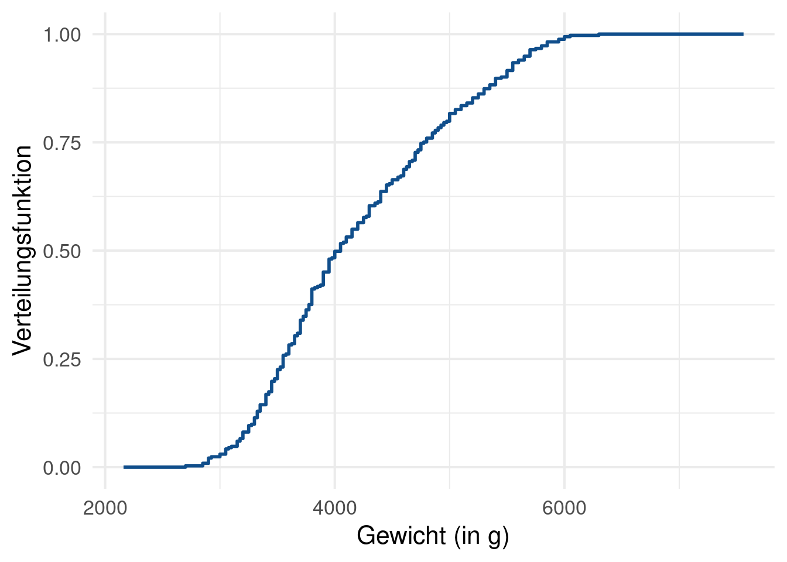
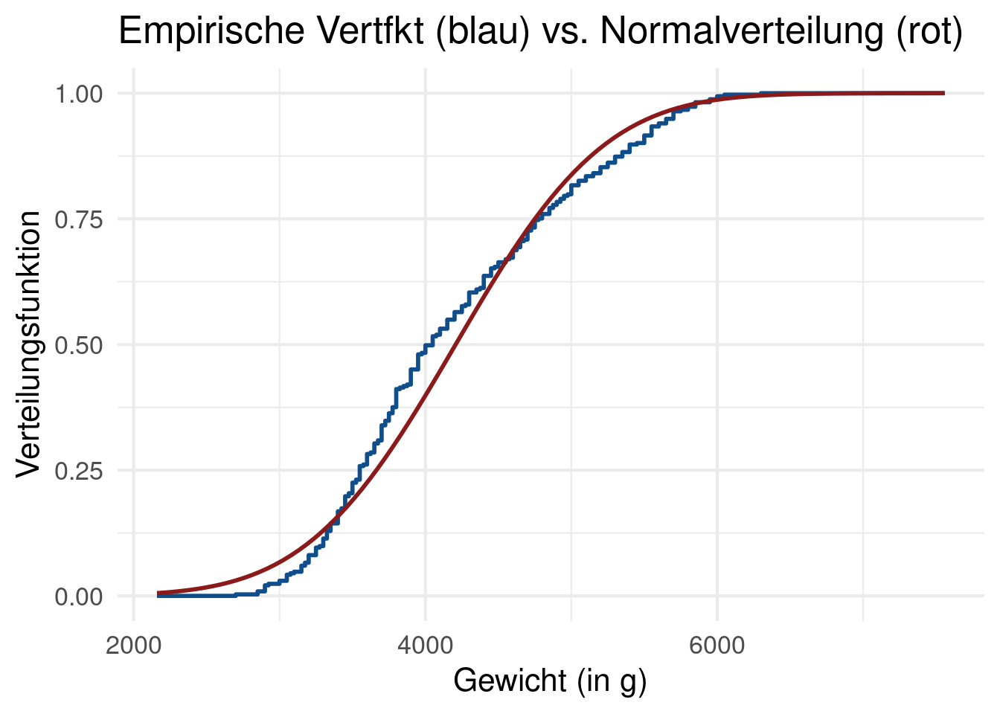

In dieser Aufgabe betrachten wir erneut den penguins Datensatz aus dem Paket palmerpenguins. Lade also nun den Datensatz und filtere ihn, sodass er keine fehlenden Daten enthält.
Basierend auf dem Körpergewicht der Penguine berechne nun die folgenden Größen:
Minimum
Maximum
Durchschnitt
Median
25% und 75%-Quantil
Deine Ausgabe sollte folgendermaßen aussehen:
# A tibble: 1 × 6
minimum maximum durschschnitt median unteres_quantil oberes_quantil
<int> <int> <dbl> <int> <dbl> <dbl>
1 2700 6300 4207. 4050 3550 4775
Statistischere Kennzahlen - 5 Punkte
Berechne nun auch die folgenden Größen:
Spannweite
Empirsche Schiefe
Empirsche Varianz
Empirische Standardabweichung
Interquantilabstand
Verwende die glue() Funktion aus dem glue Paket, um die folgende Ausgabe zu erzeugen. Die Funktionen var(), sd(), iqr() dürfen hier nicht verwendet werden. Ebenso dürfen neben tidyverse und glue keine anderen Pakete verwendet werden.
Spannweite: 3600
Interquantilabstand: 1225
Varianz: 648372.5
Standardabweichung: 805.2
Schiefe: 0.5
Verteilungsfunktion - 3 Punkte
Berechne nun noch die empirische Verteilungsfunktion und visualisiere diese. Deine Ausgabe sollte folgendermaßen aussehen. Verwende dabei nicht die ecdf() Funktion oder ein anderes Paket.

Vergleich mit Normalverteilung - 3 Punkte
Vergleiche die empirische Verteilungsfunktion mit der echten Verteilungsfunktion einer Normalverteilung mit geeigneten Parametern. Nutze geeignete Schätzer, um die Parameter zu schätzen.

Kolmogorow-Smirnow-Anpassungstest (KS-Test) - 4 Punkte
Führe einen KS-Test zum Niveau \(\alpha = 0.05\) durch, um zu testen, ob die rote und blaue Verteilungsfunktionen “signifikant” verschieden sind. Gehe dazu folgendermaßen vor:
Installiere das CPAT Paket (benötigt für Hilsfunktion)
Berechne die KS-Statistik \(D_n = \sup_{x \in \mathbb{R}} \vert \hat{F}_n(x) - F(x) \vert\), wobei \(\hat{F}_n(x)\) die blaue empirische Verteilungsfunktion und \(F(x)\) die rote Verteilungsfunktion der geeigneten Normalverteilung ist ist.
Berechne die Quantile \(k_\alpha\) der Kolmogorovverteilung mit der Funktion CPAT:::qkolmogorov() (Achting drei Doppelpunkte im Namen).
Entscheide nun anhand der Verwerfungsregel in Bemerkung 7.6.8. aus dem Skript, ob die Nullhypothese verworfen werden kann. Was bedeutet dies für die Verteilungsfunktionen?
Lineare Regression - 1 + 1 + 3 + 4 Punkte
In dem Datensatz cars wird der Bremsweg dist (in ft) eines Autos im Vergleich zu dessen Geschwindigkeit speed (in mph) gegenübergestellt. Wie jeder Besitzer eines Führerscheins (hoffentlich) weiß, steckt dahinter keine lineare sondern eine quadratische Beziehung. Hier wollen wir nun die folgenden drei Modelle vergleichen:
Lineares Modell 1: \(\texttt{dist} = a\cdot\texttt{speed} + b\) mit \(a, b \in \mathbb{R}\)
Lineares Modell 2: \(\texttt{dist} = a\cdot\texttt{speed} + b\cdot\texttt{speed}^2 + c\) mit \(a, b, c \in \mathbb{R}\)
Dazu gehen wir folgendermaßen vor:
Begründe, warum es sich bei dem dritten Modell um ein lineares Modell handelt, obwohl es einen quadratischen Term enthält.
Bestimme die Regressionparameter \(a, b, c\) der linearen Modelle mit der lm()-Funktion.
Visualisiere die Datenpunkte und überlagere die Punkte mit einem Liniendiagramm, dass die Modellgleichungen beschreibt.
Generiere synthetische Datenpunkte, indem du für \(\texttt{speed} = 26, 27, \dots, 70\) das physikalische Modell benutzt, um \(\texttt{dist}\) zu berechnen und anschließend zu jedem Datenpunkt einen (jeweils unterschiedlichen) zufälligen Fehlerterm \(\varepsilon \sim \mathcal{N}(0, 30^2)\) hinzuaddierst. Nutze nun die ursprünglich bestimmten linearen Modelle, um auf deren Basis die dist-Werte für \(\texttt{speed} = 1, 2, \dots, 70\) vorherzusagen. Vergleiche deine Vorhersagen mit den synthetischen und den Originaldaten.